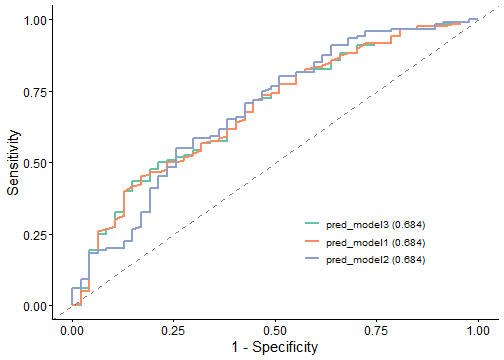
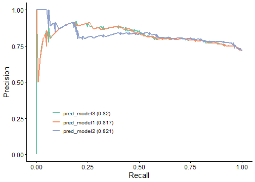
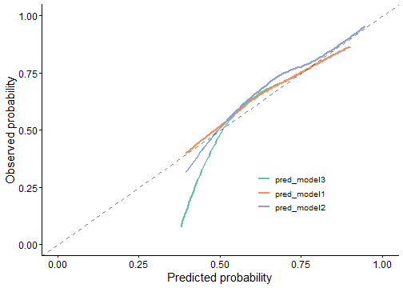
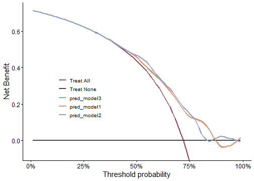
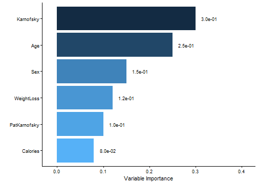
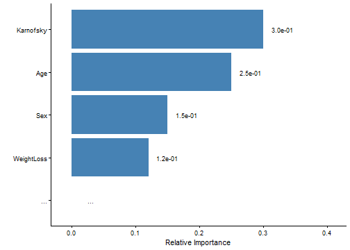

写在前面
在临床预测模型的研究中，仅仅报告”模型的 AUC 为 0.85”是远远不够的。一个完整的模型评估需要从判别力（Discrimination）、校准度（Calibration）和临床实用性（Clinical Utility）三个维度进行全面考量。审稿人也越来越倾向于看到多角度的模型评估证据。
clinpubr提供了一站式的模型评估工具，涵盖分类模型比较、时间依赖性 ROC、C-Index 计算和变量重要性可视化。本文将通过实战案例，带你完成从模型拟合到全面评估的全流程。适用场景：预测模型开发、模型比较研究、临床决策支持系统评估等。
| 评估维度 | 指标 | 含义 |
|---|---|---|
| 判别力 | AUC / C-index | 模型区分阳性/阴性个体的能力 |
| 灵敏度 / 特异度 | 在特定阈值下的分类性能 | |
| PRAUC | 对不平衡数据更鲁棒的判别指标 | |
| 校准度 | 校准图 | 预测概率与实际概率的一致性 |
| Brier Score | 预测概率的整体准确度（越小越好） | |
| 临床实用性 | DCA（决策曲线分析） | 在不同阈值下的临床净获益 |
我们使用 NCCTG 肺癌数据集，拟合三个复杂度递增的 Logistic 回归模型：
data(cancer, package = "survival")
cancer$dead <- cancer$status == 2
cancer$event <- ifelse(cancer$status == 2, 1, 0)
cancer_clean <- cancer %>%
mutate(sex = factor(sex, labels = c("Male", "Female"))) %>%
na.omit()
# 拟合三个复杂度递增的模型
cancer_clean$pred_model1 <- predict(
glm(dead ~ age + sex + ph.karno, data = cancer_clean, family = binomial),
type = "response"
)
cancer_clean$pred_model2 <- predict(
glm(dead ~ age + sex + ph.karno + pat.karno, data = cancer_clean, family = binomial),
type = "response"
)
cancer_clean$pred_model3 <- predict(
glm(dead ~ age + sex + ph.karno + wt.loss, data = cancer_clean, family = binomial),
type = "response"
)
knitr::kable(head(cancer_clean[, c("dead", "pred_model1", "pred_model2", "pred_model3")]),
caption = "模型预测值 vs 实际结局（前 6 行）"
)| dead | pred_model1 | pred_model2 | pred_model3 | |
|---|---|---|---|---|
| 2 | TRUE | 0.7868731 | 0.7661243 | 0.7858287 |
| 4 | TRUE | 0.7436147 | 0.8215218 | 0.7434448 |
| 6 | FALSE | 0.9260244 | 0.8954047 | 0.9273628 |
| 7 | TRUE | 0.7052554 | 0.7566565 | 0.7049340 |
| 8 | TRUE | 0.7704063 | 0.7279677 | 0.7724185 |
| 9 | TRUE | 0.8207969 | 0.8021612 | 0.8203195 |
classif_model_compare()
使用多个指标（AUC、准确率、灵敏度、特异度、PPV、NPV、PRAUC、Brier
Score）进行全面的模型比较，并自动生成 ROC、PR、校准和 DCA 图：
model_comparison <- classif_model_compare(
data = cancer_clean,
target_var = "dead",
model_names = c("pred_model1", "pred_model2", "pred_model3"),
save_output = FALSE
)
knitr::kable(model_comparison$metric_table, caption = "模型性能比较")| Model | AUC | PRAUC | Accuracy | Sensitivity | Specificity | Pos Pred Value | Neg Pred Value | F1 | Kappa | Brier | cutoff | Youden | HosLem | |
|---|---|---|---|---|---|---|---|---|---|---|---|---|---|---|
| 3 | pred_model3 | 0.684 (0.594, 0.774) | 0.820 | 0.581 | 0.50 | 0.787 | 0.857 | 0.381 | 0.632 | 0.217 | 0.185 | 0.777 | 0.287 | 0.985 |
| 1 | pred_model1 | 0.684 (0.594, 0.774) | 0.817 | 0.557 | 0.45 | 0.830 | 0.871 | 0.371 | 0.593 | 0.203 | 0.185 | 0.786 | 0.280 | 0.967 |
| 2 | pred_model2 | 0.684 (0.590, 0.777) | 0.821 | 0.605 | 0.55 | 0.745 | 0.846 | 0.393 | 0.667 | 0.232 | 0.182 | 0.765 | 0.295 | 0.353 |
ROC 曲线——展示不同阈值下的灵敏度与特异度权衡：

PR 曲线——对不平衡数据更灵敏的性能评估：

校准图——评估预测概率与实际概率的一致性：

决策曲线分析（DCA）——评估不同阈值下的临床净获益：

对于生存结局，时间依赖性 ROC 考虑了事件发生的时间。首先，我们拟合 Cox 比例风险模型并获取风险评分：
# 拟合 Cox 模型用于生存预测
cox_model <- coxph(Surv(time, event) ~ age + sex + ph.karno, data = cancer_clean)
cancer_clean$risk_score <- predict(cox_model, type = "risk")现在我们可以在特定时间点评估模型：
time_roc_result <- time_roc_plot(
data = cancer_clean,
event_var = "event",
time_var = "time",
marker_var = "risk_score",
times = c(200, 365),
time_unit = "days",
save_plot = FALSE
)
#> Error in time_roc_plot(data = cancer_clean, event_var = "event", time_var = "time", : unused argument (time_unit = "days")
time_roc_result
#> Error: object 'time_roc_result' not foundC-index（一致性指数）衡量生存模型的判别能力。解读标准：0.5 = 无判别力，0.7-0.8 = 可接受，>0.8 = 优秀。
变量重要性列表可以从随机森林、梯度提升机等不同模型中获取。这里我们假设从某个模型中获得了变量重要性评分：
importance_scores <- c(
Age = 0.25, Sex = 0.15, Karnofsky = 0.30,
WeightLoss = 0.12, Calories = 0.08, PatKarnofsky = 0.10
)
importance_plot(x = importance_scores, x_lab = "Variable Importance")
仅展示排名前 N 的变量，并自定义样式：
importance_plot(
x = importance_scores,
x_lab = "Relative Importance",
top_n = 4,
color = "steelblue"
)
classif_model_compare()：全面的模型比较，含
ROC、PR、校准和 DCA 图time_roc_plot()：生存结局的时间依赖性
ROC 分析calc_cindex()：计算生存模型的一致性指数importance_plot()：可视化变量重要性相关文章推荐
安装 clinpubr：
devtools::install_github("niuyu1993/clinpubr")